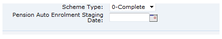
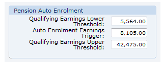
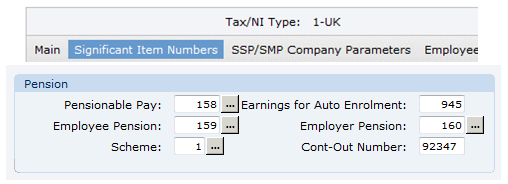
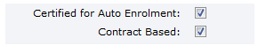
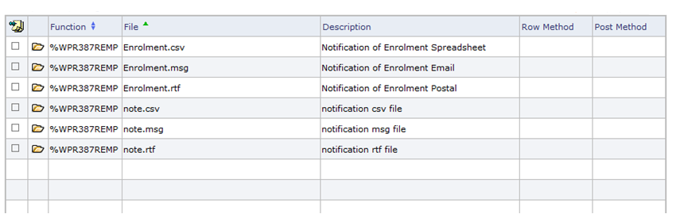

Detailed Configuration
Staging Date
Record the staging date (the date when automatic is switched on for your business) on the PAYE scheme tab in HMRC Workbench.
Staging Date Field on the HMRC Workbench

Annual Thresholds
In Annual Details for Tax Year, record the following amounts (as set by law):
- QELT Qualifying Earnings Lower Threshold
- QEUT Qualifying Earnings Upper Threshold
- AET Auto- Trigger
Annual Details Auto Fields

These values are held as annual values: converts to period-specific by dividing by the number of periods and rounding up to whole pounds. For example if annual threshold is £42,475 then to get 4-weekly we divide by 13 which gives £3,267.308, and this is rounded up to £3,268.
Pay Items
In Pay Items, set up a new pay item, to which all the components that contribute to the earnings for auto- figure (as specified by the Pensions Regulator) need to be added.
In Configuration, on the Significant Item Numbers tab, enter the number of this pay item in the Earnings for Auto field.
Payroll Configuration Significant Item Numbers Fields

In Item Sequences, add this new pay item to any relevant sequence definitions and update the individual employee sequences.
After the calculation:
- The input field on this item will hold the total auto- earnings.
- The period amount field will hold the qualifying earnings.
- The rate field will hold a flag for the category of worker, as follows: 0 – non-entitled, 1 – entitled worker, 2 – non-eligible worker, 3 – eligible worker
Pension Schemes
In Pensions, for each qualifying pension, record:
- That the scheme has been certified – that is, it is a qualifying pension.
- Whether it is contract-based (a group personal pension scheme) and a pension provider has been appointed to run the scheme.
Pension Details Auto Fields

Notification Types
In Lookup Codes, the "Pension Auto Notification Types" lookup type holds the notification types used by the software. creates these automatically; you can identify which pension schemes each notification type will be automatically created for (for example, if a pension provider is handling notifications for a scheme, you may not want to include notifications in that scheme). Leaving the Pension Schemes field blank means the notification will be created for all schemes.
For details of the individual types, see Auto- Notification Types.
Employee Maintenance
Payroll will automatically employees when the pay calculation is run (see Auto- and Pay Calculation), if they are eligible jobholders.
For employees who already belong to a qualifying pension scheme, will update the employee record to show this. Eligible jobholders already in non-qualifying schemes will additionally be enrolled into a qualifying scheme.
If an employee is to be enrolled in a qualifying scheme other than the default scheme, fill in the scheme name in Employee Maintenance.
If you want to email notifications where possible, you need to populate the employee email address. This can be done using Employee Maintenance or using the Employee Load.
Notification Templates
As part of the auto- process, generates notifications to employees and pension providers. These notifications can be sent by email, produced as a printable document, or generated as a mail merge data file you can use with external software. The Pensions Regulator website (http://www.thepensionsregulator.gov.uk/automatic-enrolment.aspx) gives more information about the requirements for notifications, and provides some letter templates you can base notifications on. However you will need to prepare the templates in the format that uses.
Use Merge File Maintenance to identify the necessary templates (email and document) for each type of notification and to associate the files with each of the functions (pages) on which you want them to be available.
The names of the files generated by the merge process are based on the name of the merge file, so it is a good idea to make the merge file names meaningful.
- %WPR387REMP Notifications Report (merge area – all pay frequencies)
- %WPR02040BENO Weekly Employee Notifications
- %WPR12040BENO Monthly Employee Notifications
- %WPR22040BENO 2-Weekly Employee Notifications
- %WPR32040BENO 4-Weekly Employee Notifications
Merge File Maintenance Showing Files Set Up for the Notification Report

See Setting Up a Generic Mail Merge, for more information.